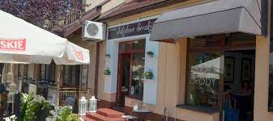
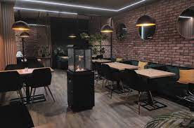
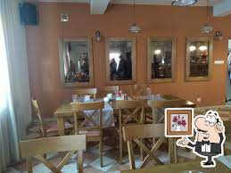
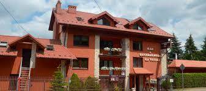
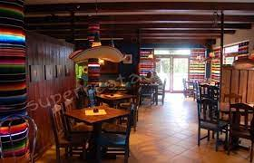

Opis restauracji:
Restauracja Jakubowe Smaki to tradycja od lat 90- tych…
Nasi pracownicy to bratnie dusze napotkane na zawodowej drodze, najlepsi z najlepszych. Nasze dania to przepisy przekazywane z pokolenia na pokolenie.
To tradycyjny smak bez kompromisów. To dbałość o każdy szczegół żeby nasi Goście czuli się u nas jak w rodzinnym domu.
Zapraszamy do Nas na smaczne i tanie obiady firmowe serwowane od poniedziałkudo piątku w godzinach od 1000 do 1600. Zapraszamy również na romantyczne kolacje, obiadyw rodzinnym gronie, komunie, chrzciny.
U Nas zorganizujesz każdą imprezę na wysokim poziomie. Czekają na Was zachęcające przystawki, apetyczne sałatki, wykwintne dania, smaczne desery i pizza podawana na cieście razowym o obniżonej kaloryczności..
Adres:
ul. Rynek 14,32-005 Niepołomice
Czynne:
Pon-Niedz od 11.00 do 22.00
Kontakt:
Emial: info@jakubowe-smaki.pl
Telefon: +48 517 473 472 
Çema Restaurant
Opis restauracji:
Restauracja ta zrodziła się z miłości do jedzenia i wielkich chęci stworzenia miejsca, w którym każdy człowiek będzie mógł odpocząć ciałem i duszą, w pięknym wystroju, przy klimatycznej muzyce i, przede wszystkim, przy pysznych i różnorodnych daniach.
Tradycyjna kuchnia włoska i turecka zachwyciła nas i od razu pochłonęła nas bez dna, czego rezultatem jest właśnie nasz mały raj na ziemi, Cema Restaurant, w miejscowości Niepołomice.
Jesteśmy otwarci na każdego klienta, niezależnie czy, tak jak my, jest już fanem, którejś z oferowanych przez nas kuchni, czy dopiero chce je poznać i się w nich zakochać.
Cema to idealne miejsce, na rodzinny obiad, wyjście ze znajomymi, czy organizację różnego rodzaju uroczystości i przyjęć. Gwarantujemy niezapomnianą podróż po smakach Italii oraz Kraju Półksiężyca.
Adres:
ul. Zamkowa 1,32-005 Niepołomice
| Wtorek-Czwartek | Piątek-Sobota | Niedziela |
| 11.00 - 22.00 | 11.00 - 22.00 | 11.00 - 22.00 |
Kontakt:
Telefon: +48 452 328 217
Email: kontakt@cema-restaurant.pl 

Restauracja Joanna
Opis restauracji:
Nasza restauracja jest ucieczką od zgiełku, hałasu, głośnej muzyki i miejskiego ruchu, oferującym wszystko, czego potrzebujesz. Niezależnie od pory roku, zawsze znajdziesz u nas przyjemność i relaks.
Jesienią i zimą, kiedy za oknem pada deszcz lub wieje nieprzyjemny wiatr, zapraszamy Cię do rozkoszowania się ciepłem kominka, obserwując tańczące płomienie, ogrzewając zmarznięte ręce i popijając aromatyczny staropolski grzaniec.
Latem, kiedy tylko aura jest łaskawa, zapraszamy Cię do naszego urokliwego ogródka, gdzie możesz odpocząć i zrelaksować się.
Nasza restauracja ma wiele do zaoferowania zarówno dla dorosłych, jak i dla dzieci. Dla najmłodszych przygotowaliśmy ogrodzony plac zabaw, gdzie mogą się bawić i cieszyć dobrą zabawą.
Dla dorosłych członków rodziny zapewniamy spokojne i przyjemne miejsce do swobodnej rozmowy, przy smacznym posiłku.
Przyjdź i doświadcz naszej restauracji, gdzie znajdziesz spokój, relaksującą atmosferę oraz różnorodne atrakcje dla całej rodziny. To miejsce, w którym odnajdziesz harmonię i wyjątkowe chwile odpoczynku.
Adres:
ul. Piękna 20a, 32-005 Niepołomice
Czynne:
| Poniedziałek | Wtorek-Niedziela |
| 11.00 - 19:00 | 11.00 - 20:00 |
Kontakt
Telefon: +48 122 813 984 

La Venta
Opis restauracji:
Restauracja "La Venta" istnieje na rynku od 2005 roku w Niepołomicach niedaleko Krakowa. Serwujemy dania kuchni Polskiej oraz Meksykańskiej, lecz to kuchnia Meksykańska jest u nas motywem przewodnim i specjalnością szefa kuchni.
W okresie wiosenno letnim zapraszamy do naszego ogródka, gdzie można rozkoszować się zielenią krzewów oraz bliskością natury Puszczy Niepołomickiej.
Nasz lokal jest przytulnym miejscem spotkań przyjaciół, par oraz rodzin z dziećmi. Posiadamy bezpieczny plac zabaw dla Państwa pociech oraz nieograniczone, darmowe WiFi. Organizujemy również imprezy okolicznościowe .
Wnętrze naszej restauracji to dwie przytulne sale, w których wystrój nawiązuje do Meksyku. W mroźne zimowe dni zapraszamy do sali w której znajdzuje się kominek. Restauracja "La Venta" pyszne miejsce na spoktania ze znajomymi.
Serdecznie Zapraszamy
Adres:
Bocheńska 59, 32-005 Niepołomice
| Poniedziałek-Czwartek | >Piątek-Sobota |
| 12:00 – 23:00 | 12:00 – 00:00 |
KONTAKT
Telefon: +48 012 281-37-68
Email: laventa@laventa.pl
Facebook: https://www.facebook.com/La.Venta.Niepolomice/  